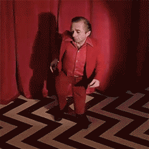

Garmonbozia

What the hell is it?
In Twin Peaks, garmonbozia is pain and sorrow, manifested as a substance resembling cream of corn soup for the spirits that feed on it in the White Lodge/Black Lodge. This is according to the little man, who may well be the other arm of the one-armed man.
Ingredients
5 cans creamed corn
1/5th of vodka, the cheaper the better
emulsifier
horseradish
Campari to taste
a dash of bleach
Instructions
PREHEAT THE OVEN TO 100000F.
COMBINE
Stir all the ingredients together, preferably with a wooden spoon that has been dropped in the toilet. Slurp it backwards or, if this isn't possible, pour into a large glass and chug. As you run screaming to the closest wastebasket, sink, or toilet, contemplate what "pain and sorrow" means to you.